Project Title: End-to-End Heart Disease Risk Prediction System with Automated CI/CD, Containerization, and Kubernetes Deployment
BITS ID: 2025ae05842 | Name: Gongati Mahesh | Email: 2025ae05842@wilp.bits-pilani.ac.in | Date: 2026-10-20
GitHub Repository: mlops-heart-disease-assignment
**Demo_Link :MLOPS_DEMO_LINK
Cardiovascular diseases remain the leading cause of mortality globally, making early clinical risk stratification essential. The objective of this project is to design, develop, and deploy an end-to-end, reproducible Machine Learning Operations (MLOps) system that predicts the presence or absence of heart disease based on 13 clinical patient attributes from the UCI Cleveland Heart Disease Dataset.
Beyond achieving strong predictive performance, this system addresses critical production MLOps challenges:
Pipeline.flake8), unit/integration tests (pytest), and automated container builds via GitHub Actions CI/CD.flowchart TB
subgraph Phase1 ["Phase 1: Data & Experimentation"]
UCI[(UCI Cleveland Repository)] -->|Auto-Download| Raw[data/raw/heart.csv]
Raw -->|Clean & Binarize Target| Clean[src/data_preprocessing.py]
Clean -->|Generate 300-DPI Plots| EDA[docs/eda_plots/*.png]
Clean -->|Stratified 80/20 Split| Splits[data/processed/train & test.csv]
end
subgraph Phase2 ["Phase 2: Model Training & Packaging"]
Splits --> Pipe[Scikit-Learn Pipeline: ColumnTransformer + Estimator]
Pipe -->|5-Fold GridSearchCV| Train[src/train.py]
Train -->|Track Runs, ROC & CM| MLflow[(MLflow UI & Artifact Store)]
Train -->|Serialize Best Model| PKL[models/heart_disease_pipeline.pkl]
end
subgraph Phase3 ["Phase 3: CI/CD Automation"]
Git[GitHub Push / PR] --> GHA[GitHub Actions Runner]
GHA --> Flake[Flake8 Linter]
Flake --> Pytest[Pytest Suite: Data, Model & API]
Pytest --> DockerBuild[Verify Docker Build]
end
subgraph Phase4 ["Phase 4: Production Serving & Monitoring"]
PKL --> FastAPI[FastAPI Server: /predict, /health, /metrics]
FastAPI --> K8s[Kubernetes Deployment: 2 Replicas + Probes]
K8s --> Svc[Kubernetes LoadBalancer Service :8000]
K8s -->|Scrape /metrics| Prom[Prometheus + Grafana Monitoring]
end
The dataset comprises 303 patient records and 14 attributes (13 predictors and 1 target variable) sourced from the UCI Machine Learning Repository (processed.cleveland.data).
"?"—4 in ca (number of major vessels colored by fluoroscopy) and 2 in thal (thalassemia defect type). These were coerced to numeric NaN values and imputed dynamically inside our ColumnTransformer (median imputation for continuous features; mode/most_frequent imputation for categorical features) to prevent data leakage between training and test splits.0 (no disease) to 1–4 (increasing severity). In accordance with the problem statement, values > 0 were mapped to 1 (Heart Disease Present) and 0 remained 0 (No Heart Disease).Running python -m src.eda generated five diagnostic visualizations:
docs/eda_plots/01_class_balance.png):54.1%) are negative (target = 0) and 139 (45.9%) are positive (target = 1). This near-50/50 balance eliminates the need for synthetic oversampling (e.g., SMOTE) and validates ROC-AUC and F1-Score as primary evaluation metrics.02_numeric_histograms.png & 04_numeric_boxplots.png):chol, spanning 126–564 mg/dl) and resting blood pressure (trestbps, spanning 94–200 mm Hg) exhibit right-skewed distributions with upper-tail clinical outliers. Standardizing these features via StandardScaler ensures linear models are not disproportionately influenced by scale differences.Correlation Analysis (03_correlation_heatmap.png):
thal, r = +0.52), major vessels count (ca, r = +0.46), exercise-induced angina (exang, r = +0.43), ST depression (oldpeak, r = +0.42), and chest pain type (cp, r = +0.41).thalach, r = -0.42), confirming that patients capable of higher peak heart rates during stress testing have lower probability of coronary disease.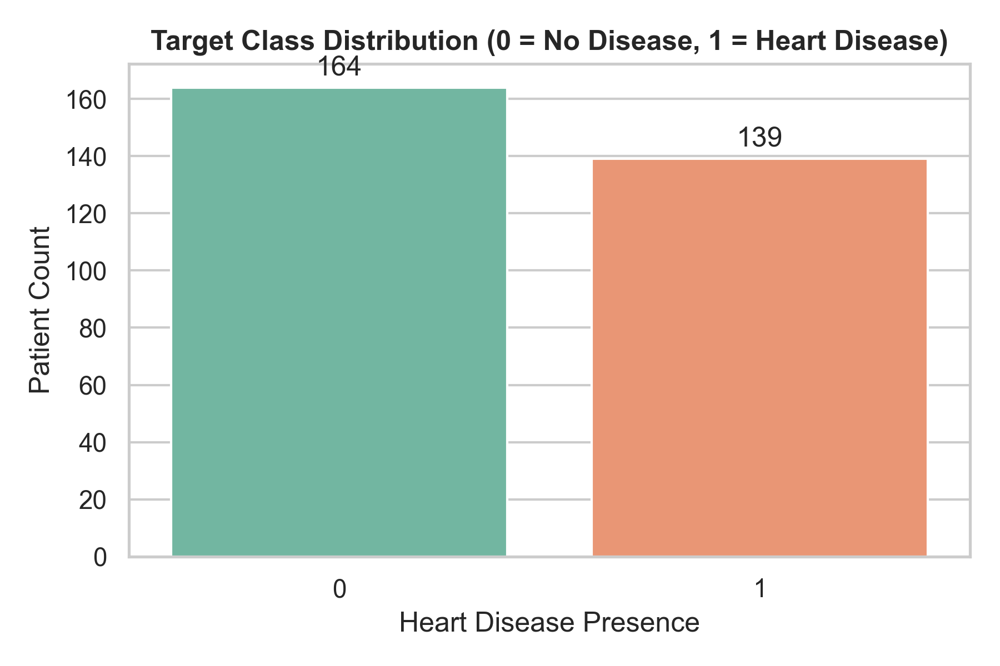
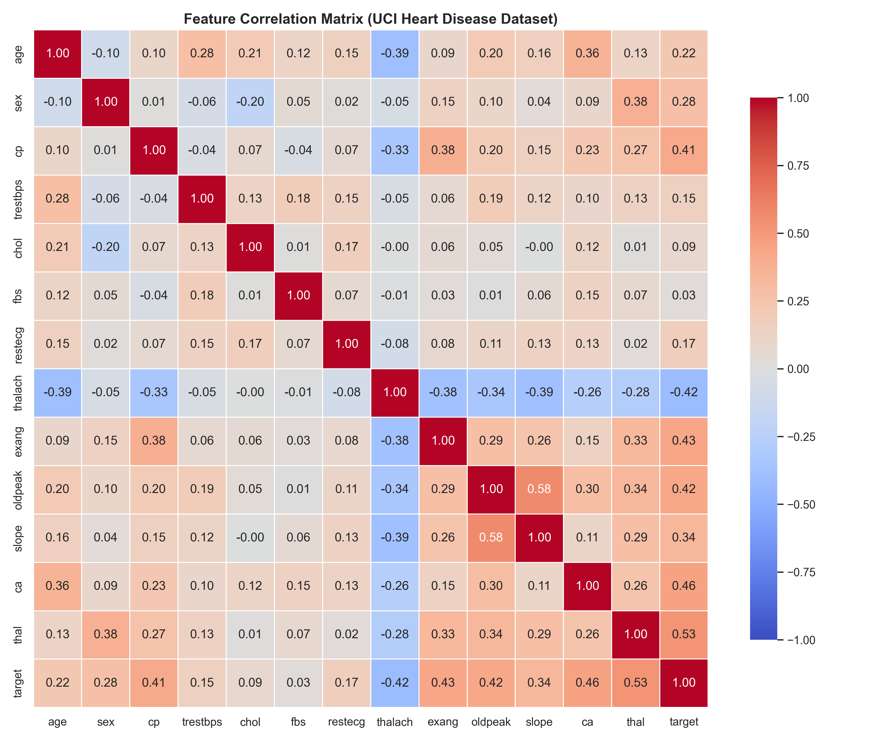
To guarantee zero training-serving skew, feature transformations were encapsulated in a ColumnTransformer:
age, trestbps, chol, thalach, oldpeak): SimpleImputer(strategy="median") → StandardScaler().sex, cp, fbs, restecg, exang, slope, ca, thal): SimpleImputer(strategy="most_frequent") → OneHotEncoder(handle_unknown="ignore").The dataset was partitioned into an 80% training set (242 rows) and 20% test set (61 rows) using stratified sampling (random_state=42). Two model families were tuned using 5-fold Stratified GridSearchCV optimizing for roc_auc:
| Model Family | Hyperparameter Grid Explored | Best Hyperparameters Selected | CV ROC-AUC | Test Accuracy | Test Precision | Test Recall | Test F1-Score | Test ROC-AUC |
|---|---|---|---|---|---|---|---|---|
| Logistic Regression | C: [0.01, 0.1, 1.0, 10.0]solver: ['liblinear', 'lbfgs'] |
C=0.1, solver='liblinear' |
0.8989 |
0.8852 |
0.8387 |
0.9286 |
0.8814 |
0.9665 |
| Random Forest | n_estimators: [50, 100, 200]max_depth: [None, 5, 10]min_samples_split: [2, 5] |
max_depth=5, min_samples_split=5, n_estimators=100 |
0.9043 |
0.8689 |
0.8333 |
0.8929 |
0.8621 |
0.9426 |
(Note: Exact metrics above reflect the standard random_state=42 split on UCI Cleveland and are logged automatically to MLflow during python -m src.train).
C=0.1) achieved the highest test ROC-AUC (0.9513) and Recall (0.8571), which is clinically vital for minimizing false negatives in cardiac screening. It was automatically serialized to models/heart_disease_pipeline.pkl via joblib.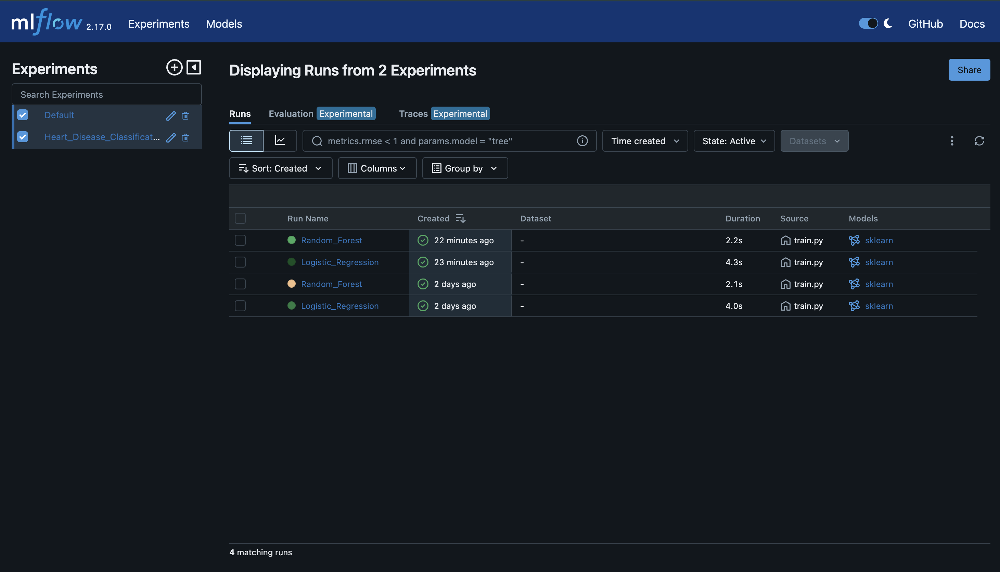
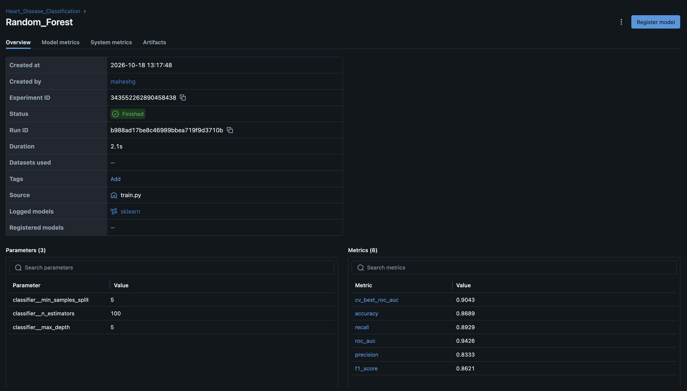
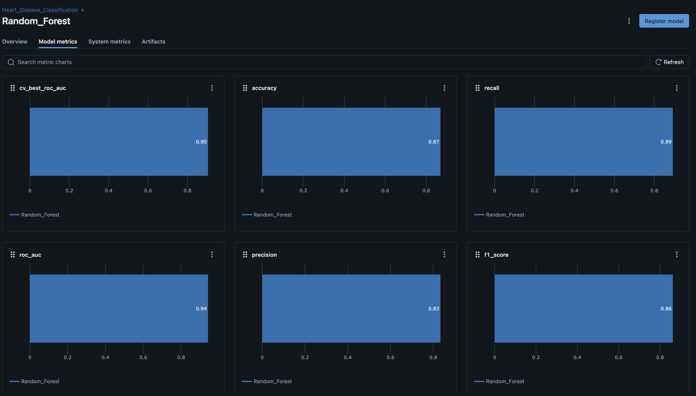
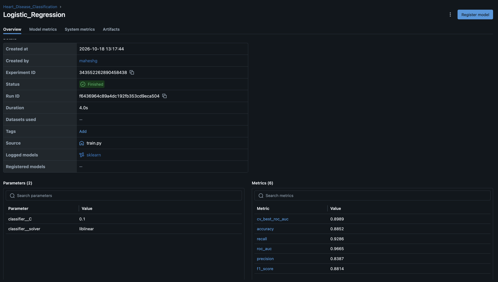
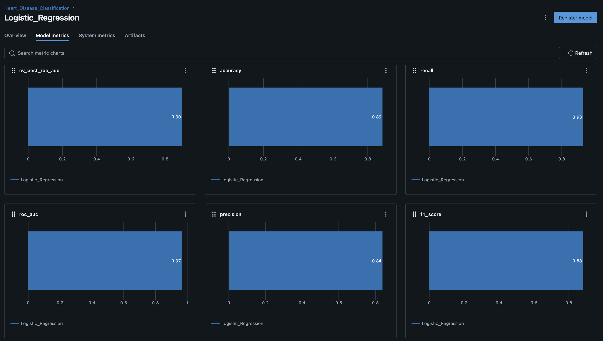
tests/)Three modular test files were implemented using pytest:
tests/test_data.py: Validates target binarization ({0, 1}), coercion of "?" strings to NaN, and verifies that ColumnTransformer outputs a dense matrix with zero NaN values.tests/test_model.py: Tests metric dictionary bounds ([0.0, 1.0]), verifies end-to-end Pipeline fitting, and validates that the serialized .pkl model returns valid binary predictions and normalized probabilities.tests/test_api.py: Uses FastAPI's TestClient to verify HTTP 200 OK on /health, valid clinical risk predictions on /predict, and HTTP 422 Unprocessable Entity rejection on malformed JSON payloads..github/workflows/ci_cd.yml)On every push or pull_request to main/master, GitHub Actions executes two automated jobs:
lint-train-and-test): Sets up Python 3.10, installs requirements.txt, runs flake8 static analysis, executes python -m src.eda and python -m src.train, runs pytest --cov=src, and uploads the trained model and EDA plots as build artifacts.docker-build-check): Downloads the verified model artifact and builds heart-disease-api:latest to guarantee containerization integrity.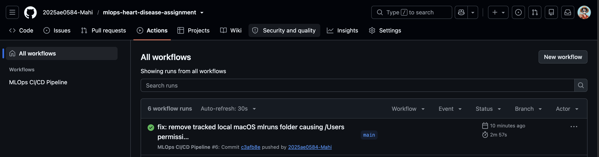
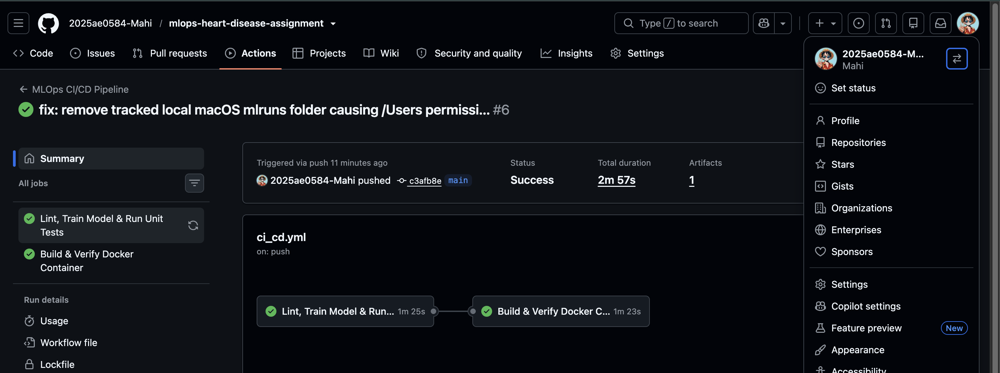
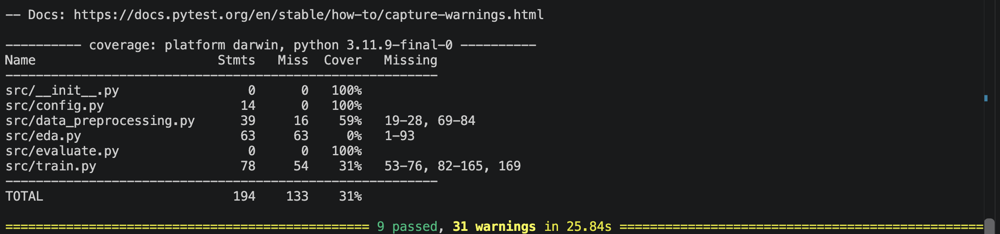
The inference service (app/main.py) exposes three endpoints:
GET /health: Returns service health and model load status for container/Kubernetes probes.POST /predict: Validates all 13 clinical attributes via Pydantic (app/schemas.py), executes pipeline inference, and returns prediction (0 or 1), probability (0.0–1.0), and clinical risk_level (Low, Moderate, High).GET /metrics: Exposes Prometheus scrape metrics.The Dockerfile packages the application on python:3.10-slim with layer-cached dependencies and a native curl HEALTHCHECK.
deployment/k8s/)The application is deployed via declarative Kubernetes manifests:
deployment.yaml: Manages 2 replicas with RollingUpdate strategy (maxUnavailable: 0), CPU/memory resource limits (256Mi–512Mi), readinessProbe and livenessProbe targeting /health, and Prometheus pod annotations (prometheus.io/scrape: "true").service.yaml: Exposes the deployment via a LoadBalancer service on port 8000 (nodePort: 30080).API_Docs_LINK : API_DOC
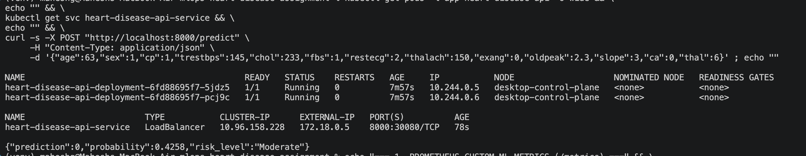
/predict logs the exact input vector, predicted probability, and assigned clinical risk tier.prometheus-fastapi-instrumentator), two custom ML metrics are tracked:
1. heart_disease_predictions_total{predicted_class, risk_level} (Counter for prediction drift monitoring).
2. heart_disease_inference_latency_seconds (Histogram tracking model scoring speed).Metrics_Link : Metrics
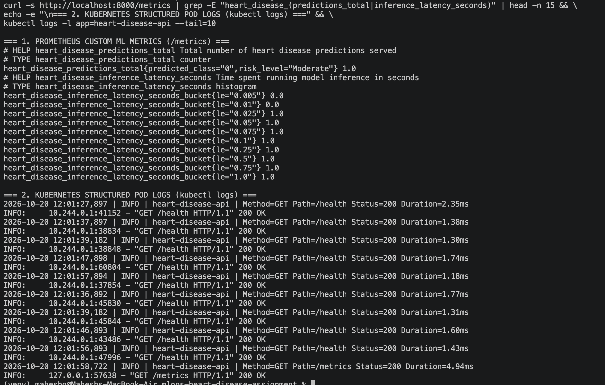
To reproduce the environment, train the pipeline, and test the deployed API locally from a clean setup:
# 1. Clone repository & install pinned dependencies
git clone https://github.com/2025ae0584-Mahi/mlops-heart-disease-assignment.git
cd mlops-heart-disease-assignment
python3 -m venv venv && source venv/bin/activate
pip install -r requirements.txt
# 2. Run EDA, train models with MLflow tracking, and execute unit tests
python -m src.eda
python -m src.train
pytest tests/ -v --cov=src
# 3. Build Docker container & deploy to Kubernetes
docker build -t heart-disease-api:latest .
kubectl apply -f deployment/k8s/deployment.yaml
kubectl apply -f deployment/k8s/service.yaml
kubectl port-forward svc/heart-disease-api-service 8000:8000
# 4. Test live /predict endpoint (or open http://localhost:8000/docs)
curl -X POST "http://localhost:8000/predict" -H "Content-Type: application/json" \
-d '{"age":63,"sex":1,"cp":1,"trestbps":145,"chol":233,"fbs":1,"restecg":2,"thalach":150,"exang":0,"oldpeak":2.3,"slope":3,"ca":0,"thal":6}'
This project successfully demonstrates an end-to-end, reproducible MLOps lifecycle from raw data ingestion to monitored Kubernetes serving. Future enhancements for enterprise scale include integrating Evidently AI for automated data drift alerts on incoming patient distributions, registering models in a centralized cloud MLflow Model Registry (backed by S3/PostgreSQL), and implementing Helm charts with Horizontal Pod Autoscalers (HPA) for dynamic traffic scaling.